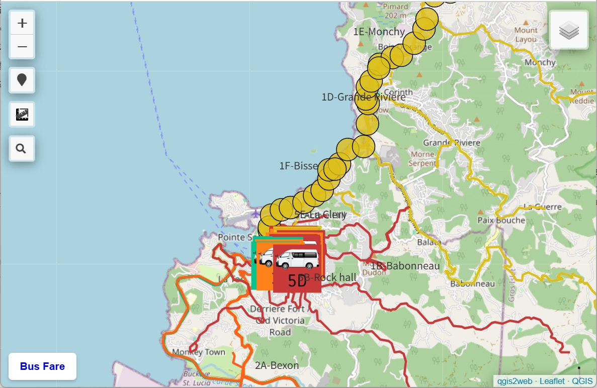
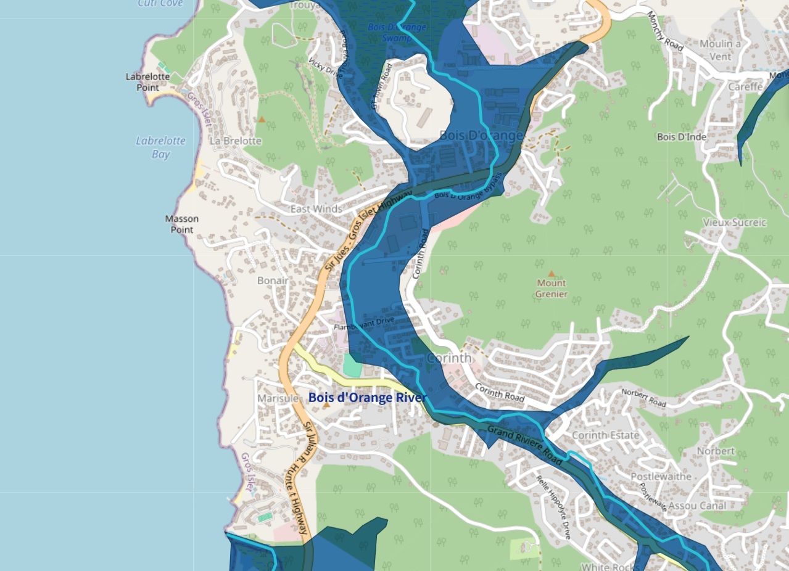
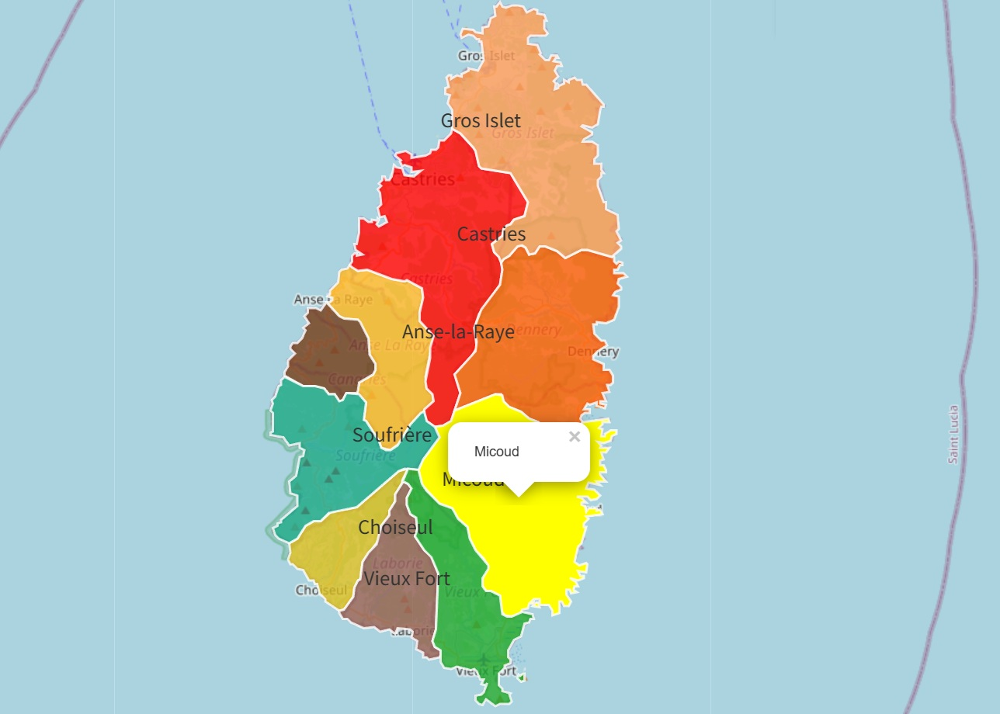
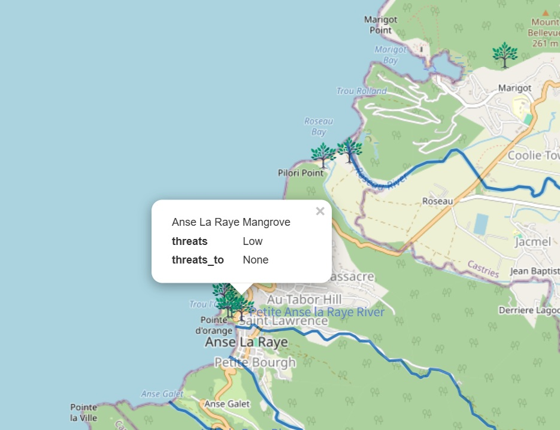

Castries-based Transport Map Saint Lucia
Interactive route map with detailed stops, tourist-friendly pamphlet, and fare table. For example, Castries to town is only 2.5 EC dollars per ride.
public transportation, natural hazard information, education. Selected works created during overseas volunteer service in Saint Lucia and ongoing research.
public transportation, natural hazard information, education (hosted on GitHub Pages).

Interactive route map with detailed stops, tourist-friendly pamphlet, and fare table. For example, Castries to town is only 2.5 EC dollars per ride.

Hazard maps of flood, landslide, and hurricane, combined with a simulation map of fire engine response time.

An interactive map designed to help primary school students learn the locations of different areas across the island. The color scheme is inspired by traditional Creole colors.

Mangrove forests grow in coastal areas where seawater and freshwater mix, forming brackish zones. To protect these forests and the island’s beautiful environment, it is important not to throw garbage into rivers.
Interactive dashboards created with Tableau to visualize census data in Saint Lucia.
This dashboard allows users to explore population and gender distribution across Saint Lucia’s settlements using interactive filters.

S・S
GIS Engineer / Spatial Data Analyst. Experienced in GIS, R, Python, and Tableau.
Please use the form below for inquiries.